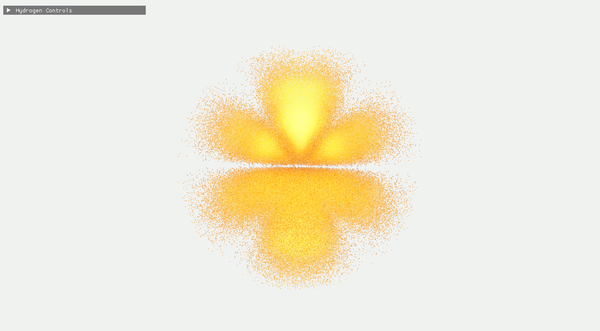

Featured Project
Hydrogen Quantum Simulator
A real-time C++ and OpenGL visualization of hydrogen atom wavefunctions with ray-traced/Kavan-style particle rendering, polished visual presets, volume ray marching, and slicing/clipping tools.
Interactive browser demo available. The full C++/OpenGL version on GitHub includes the enhanced renderer, HDR bloom, presentation presets, flowing probability particles, and optimized particle animation.
